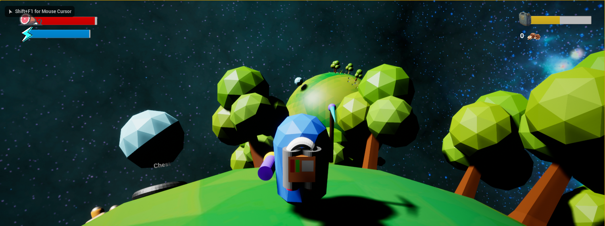

Son Nguyen
Space Farmer
Itch.IOSpace Farmer is my first solo game on UE4. This game is an open-world sandbox game that the players need to survive by planting crops and crafting stuff. Space Farmer is still under development. This game was made on Unreal Engine 4 and under 70 hours. Space Farmer has a great and unique idea in the sandbox game genre. Although this game isn't completed yet, I really want to share this idea with everyone who cares about NFT and sandbox genre because I believe this genre is going to bloom in the future.
- My Contributions:
